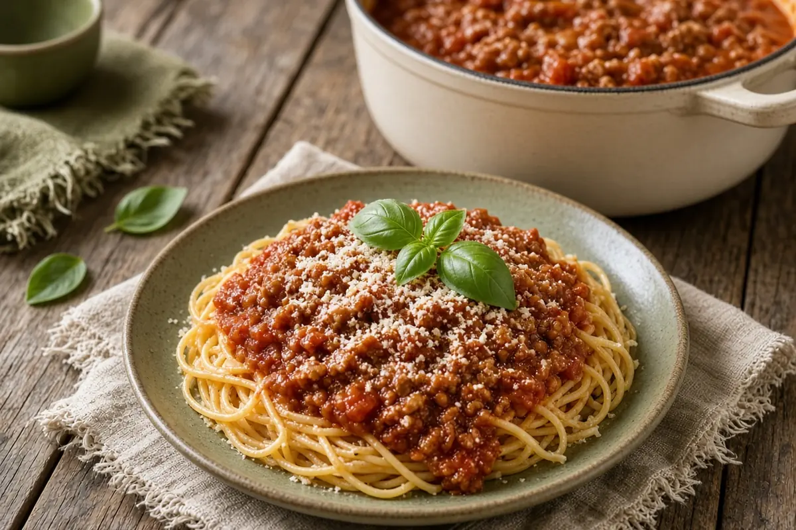

Jo Mama's Big-Batch Italian Sausage Spaghetti
A big pot of Italian sausage tomato sauce, simmered low for an hour or more with basil, a touch of brown sugar, and a pinch of baking soda to smooth out the acidity.

Adapted from Food.com
10 servings
By
Yield: 10 to 14 servings
Prep:
Cook:
Total:
Difficulty: Easy
Ingredients
- 2 lb Italian sausage (mild or hot), casings removed
- 1 small onion, chopped, optional
- 3 to 4 cloves garlic, minced
- 1 (28-oz) can diced tomatoes
- 2 (6-oz) cans tomato paste
- 2 (15-oz) cans tomato sauce
- 2 cups water
- 3 tsp dried basil
- 2 tsp dried parsley flakes
- 1 1/2 tsp brown sugar
- 1 tsp salt
- 1/2 tsp crushed red pepper flakes
- 1/4 tsp coarse ground black pepper
- 1 tsp baking soda
- 1 lb thin spaghetti
- 1 spaghetti squash, cooked, optional
- Parmesan cheese, for serving
Instructions
- Brown the sausage in a large heavy stockpot over medium heat, breaking it up as it cooks, about 10 minutes.
- Add the onion and cook, stirring now and then, until softened, about 5 minutes.
- Stir in the garlic, diced tomatoes, tomato paste, tomato sauce, and water, then the basil, parsley, brown sugar, salt, red pepper flakes, black pepper, and baking soda. It will foam a little from the baking soda.
- Bring just barely to a boil, then turn the heat to low and simmer 1 hour, stirring often so the bottom doesn't scorch.
- Cook the spaghetti according to the package, about 10 minutes, and drain.
- Spoon the sauce over the spaghetti (or spaghetti squash) and top with Parmesan.
Notes: AnyList showed this doubled; amounts are back at 1x, which still makes a big pot. A longer simmer only makes it better; add a splash of water if it gets thick. The sauce freezes well.